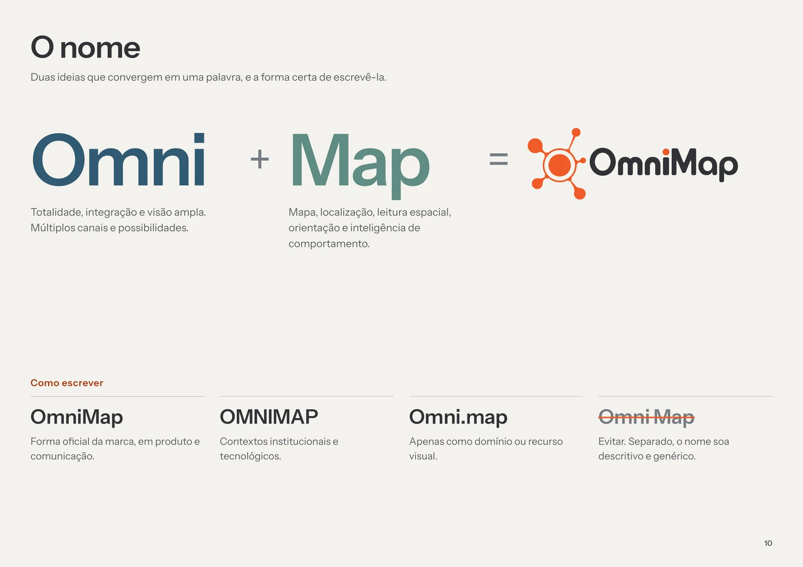
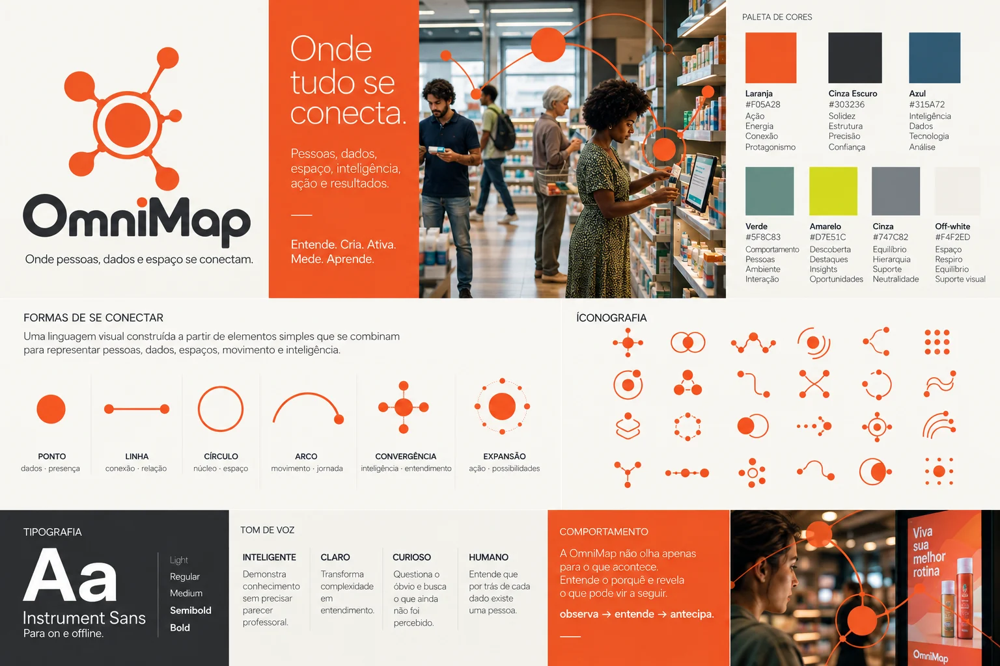
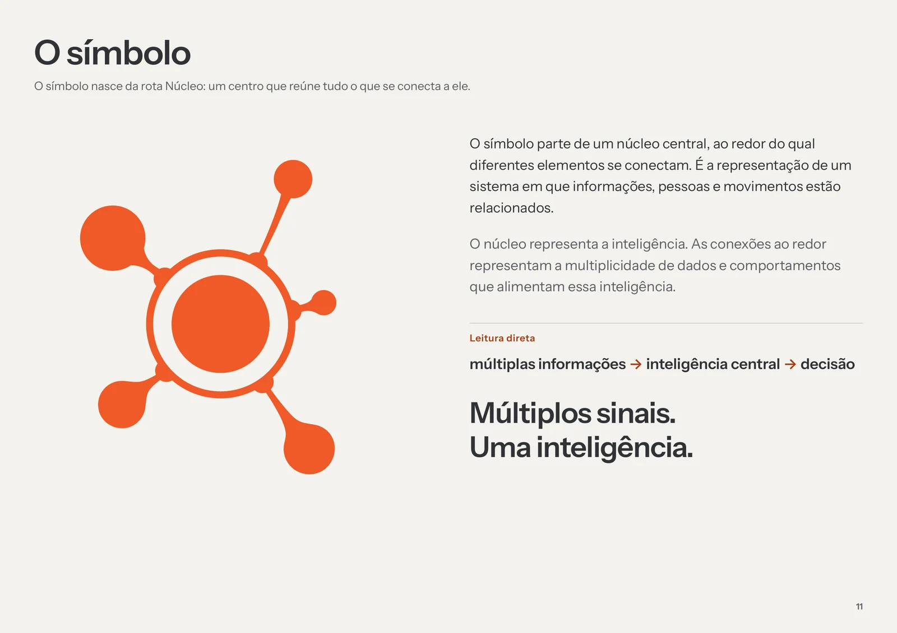
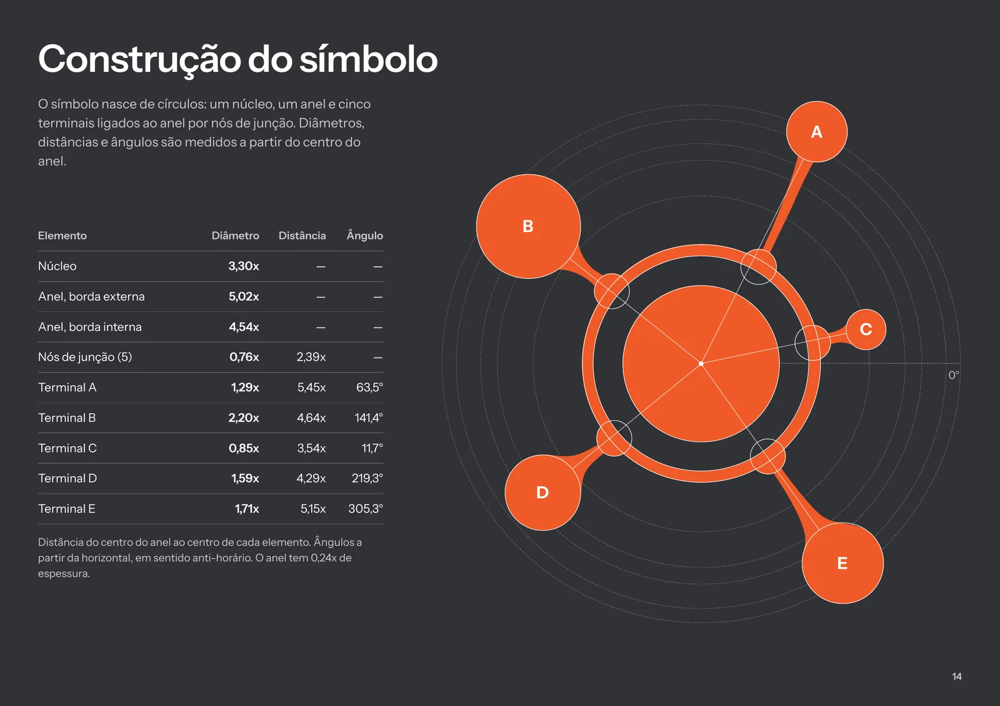
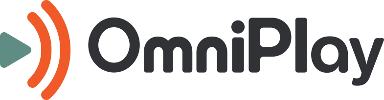
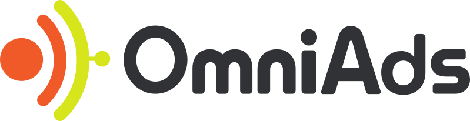

OmniMap
A Data Signage começou como sinalização digital e cresceu até ler comportamento nos pontos de venda com câmeras e IA. Do primeiro nome testado ao guia final, criamos a OmniMap, hoje em implantação.
Desafio
A empresa tinha um nome e uma proposta de serviços que cresceram conforme a demanda do mercado. Começou como sinalização digital e passou a cruzar pessoas, espaço e dados com câmeras e IA.
O nome contava de onde ela veio, não o que ela virou, e a marca não acompanhava a tecnologia. Havia ainda uma janela rara: sem domínio consolidado nem presença de mercado, era o momento mais barato de mudar.
Estratégia
Aplicamos a metodologia VBRA, que une estratégia, personalidade de marca, criatividade, experiência e narrativa. Como agência, participamos também do novo plano de negócios, para que a marca nascesse alinhada ao que a empresa passou a vender.
Reposicionamos a empresa de “digital signage + dados” para Behavior Intelligence e organizamos a plataforma em torno de uma ideia: tornar visível o que acontece no espaço, para transformar inteligência em ação. O Sábio entende, o Explorador descobre, e a OmniMap transforma esse conhecimento em ação. Seis valores em sequência, da curiosidade à ação, e um ciclo de negócio: entende, conecta, cria, ativa, mede, aprende.
Múltiplos sinais. Uma inteligência.
Naming
Um nome carrega a categoria, a promessa e a memória de uma marca. Trocá-lo só fica mais caro com o tempo, e por isso essa decisão veio primeiro.
Exploramos mais de 100 nomes: 30 avançaram e mais de 70 caíram por conflito real de marca ou de sentido. A OmniMap partiu de uma sugestão do fundador da empresa, que validamos e endossamos: Omni, de totalidade e visão ampla, mais Map, de leitura espacial e inteligência de comportamento. A checagem formal no INPI não encontrou conflitos e os domínios .com.br e .tec.br estavam livres.

Identidade
Exploramos cinco rotas de símbolo até chegar ao Núcleo: um centro que reúne tudo o que se conecta a ele, com cinco conexões. Lê-se como múltiplas informações, inteligência central, decisão. O logotipo é um desenho proprietário, com o ponto do “i” em laranja.
A paleta tem sete cores, cada uma com um papel (laranja é ação, azul é inteligência, verde é comportamento). A tipografia é a Instrument Sans, e a linguagem visual tem seis formas de se conectar e 30 ícones. A fotografia mostra pessoas reais em espaços reais de varejo.



Arquitetura de marcas
A OmniMap é a marca-mãe, com três submarcas que levam o prefixo Omni e o mesmo desenho de letra: OmniSense (analytics), OmniPlay (gestão de conteúdo) e OmniAds (retail media). Cada uma tem uma cor de apoio (azul, verde e amarelo), e o laranja fica só na marca-mãe.

Gestão de conteúdo
Retail mediaComunicação
Um guia de 38 páginas reúne plataforma, identidade e aplicação, com tom de voz inteligente, claro, curioso e humano.
Para a apresentação a parceiros, criamos o roteiro e o storyboard de um vídeo de 40 segundos, com locução curta e fechamento só com a marca.
Em implantação
O ciclo está completo: nome validado, plataforma, identidade, arquitetura e guia. A marca começa agora a ocupar os pontos de contato da OmniMap.